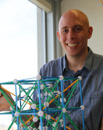

Christopher R. H. Hanusa

| Address: | Queens College Mathematics, Kiely 243 65-30 Kissena Blvd. Queens, NY 11367-1597 |
| Phone: | (718) 997-5964 |
| Fax: | (718) 997-5882 |
| E-mail: | chanusa@qc.cuny.edu |
| Websites: | http://qc.edu/~chanusa/ |
| http://christopherhanusa.com/ |
This HTML version is current as of May 2017.
Also available in a PDF file which is current as of January 2025.
Also available in a PDF file which is current as of January 2025.
| Employment | |
|---|---|
| 2020–present | Professor, Queens College, Queens, NY. |
| 2023–2026 | Faculty Liaison for Evaluation and Assessment, Queens College, Queens, NY. |
| 2015–2020 | Associate Professor, Queens College, Queens, NY. |
| 2008–2015 | Assistant Professor, Queens College, Queens, NY. |
| 2005–2008 | Robert Riley Assistant Professor, Binghamton University, Binghamton, NY. |
| Education | |
| Sept. 2003–June 2005 |
Ph.D. in Mathematics,
University of Washington, Seattle, WA.
Ph.D. Thesis: A Gessel-Viennot-Type Method for Cycle Systems and Applications to Aztec Pillows Advisor: Henry Cohn. |
| Sept. 2001–June 2003 | M.S. in Mathematics, University of Washington, Seattle, WA. |
| Aug. 1997–May 2001 |
B.S. in Mathematics,
Harvey Mudd College, Claremont, CA.
Graduated with Distinction and with Honors in Mathematics. Thesis: A Generalized Binet's Formula for kth Order Linear Recurrences: A Markov Chain Approach Advisor: Francis Su. |
| Grants and Fellowships | |
| 2016–2017 | PSC-CUNY Research Award TRADA-47-191. Rational Catalan combinatorics and their visualizations. |
| 2016–2017 | Shapeways EDU Research Grant (First of its kind, for innovation in 3D printing.). |
| 2014–2015 | PSC-CUNY Research Award TRADA-45-60. Statistics on simultaneous core partitions. |
| 2012–2014 | CUNY Graduate Center Graduate Research Technology Incentive (Round 16) ($50,000 in institutional funds dedicated to the Queens College Department of Mathematics). Sought and received matching funds ($150,000) from the Queens College Technology Fee to renovate Kiely Hall Room 258 into a state-of-the-art mathematics lecture hall. |
| 2013–2014 | PSC-CUNY Research Award TRADA-44-168. Applications of core partitions. |
| 2012–2013 | PSC-CUNY Research Award TRADA-43-127. Research in core partitions. |
| 2011–2012 | PSC-CUNY Research Award TRADA-42-115. Combinatorial interpretations in affine Coxeter groups. |
| 2010–2011 | PSC-CUNY Research Award PSCREG-41-303. Fully commutative elements in affine Coxeter groups. |
| 2009–2010 | PSC-CUNY Research Award PSCOOC-40-124. Sequences, Matrices, and Graph Theory. |
| 2005 |
VIGRE Fellowship, UW Department of Mathematics.
|
| Honors and Awards | |
| March 6, 2013 | First Place Poster Presenter, ICERM Workshop on Whittaker functions, Schubert calculus, and crystals. Providence, RI. |
| May 5, 2012 | Sole recipient of the Distinguished Teaching Award, Metro New York Section of the Mathematical Association of America |
| 2003–2004 | Excellence in Teaching Award, UW Department of Mathematics. |
| 2001 | Graduate School Merit Award, University of Washington. |
| 2001–2005 | Teaching Assistantship, UW Department of Mathematics. |
| 2001 | NSF Fellowship Honorable Mention. |
| 2000–2001 | MCM Competition–Outstanding, Spring 2001; Honorable Mention, Spring 2000. |
| 1998 |
Freshman Mathematics Award, Harvey Mudd College.
|
| Papers and Talks | |
| Portfolio of Various Media | |
| Teaching | |
| Research Interests | |
| Conferences and Workshops | |
| May 5–7, 2017 | Construct3D 2017. Durham, NC. |
| November 7–11, 2016 | AIM Workshop on Polyhedral Geometry and Partition Theory. San Jose, CA. |
| June 27–July 1, 2016 | Illustrating Mathematics, an ICERM Topical Workshop. Providence, RI. |
| August 5–8, 2015 | MAA MathFest. Washington, DC. |
| August 2–4, 2015 | MOVES Conference. National Museum of Mathematics, NYC, NY. |
| June 23–27, 2014 | Stanley @ 70. Cambridge, MA. |
| October 5, 2013 | Discrete Math Day at Wesleyan College. Middletown, CT. |
| June 24–28, 2013 | Formal Power Series and Algebraic Combinatorics. Paris, France. |
| May 21–24, 2013 | 2013 Combinatorial and Additive Number Theory. CUNY Graduate Center, NYC. |
| March 4–8, 2013. | ICERM Workshop on Whittaker functions, Schubert calculus, and crystals. Providence, RI. CUNY Graduate Center, NYC. |
| May 22–25, 2012 | 2012 Combinatorial and Additive Number Theory. CUNY Graduate Center, NYC. |
| April 21, 2012 | Hudson River Undergraduate Mathematics Conference. Springfield, MA. |
| September 8–9, 2011 | NY Workshop on the Symmetric Group. CUNY Graduate Center, NYC. |
| June 13–17, 2011 | Formal Power Series and Algebraic Combinatorics. Reykjavik, Iceland. |
| April 9–10, 2011 | AMS Eastern Sectional Meeting Worcester, MA. |
| November 19, 2010 | Ninth Northeast Probability Seminar. CUNY Graduate Center, NYC. |
| August 5–7, 2010 | MAA MathFest 2010. Pittsburgh, PA. |
| June 8, 2010 | Technology in Mathematics Instruction Conference 2010. CUNY Graduate Center, NYC. |
| November 20, 2009 | Eighth Northeast Probability Seminar. Columbia University, NYC. |
| October 14, 2009 | CUNY High Performance Computing Parallel Computing Workshop. CUNY Graduate Center, NYC. |
| September 26, 2009 | Discrete Math Day at Misericordia College. Dallas, PA. |
| July 20–24, 2009 | Formal Power Series and Algebraic Combinatorics. Hagenburg, Austria. |
| May 16, 2009 | Graph Theory Day Fifty-Seven. Nassau Community College. Garden City, NY. |
| January 6–9, 2008 | Joint Mathematics Meetings. San Diego, CA. |
| September 15, 2007 | Discrete Math Day at Middlebury College. Middlebury, VT. |
| February 12–16, 2007 | Statistical Mechanics and Combinatorics. Val-Morin, Québec, Canada. |
| May 6, 2006 | Discrete Math Day at Binghamton University. Binghamton, NY. |
| June 20–25, 2005 | Formal Power Series and Algebraic Combinatorics. Taormina, Italy. |
| Jan. 31–Feb. 4, 2005 | MSRI workshop on Markov Chains in Algorithms and Statistical Physics. Berkeley, CA. |
| Jan. 5–8, 2005 | Joint Mathematics Meetings. Atlanta, GA. |
| June 28–July 2, 2004 | Formal Power Series and Algebraic Combinatorics. Vancouver, BC, Canada. |
| March 2004 | International Biometric Society–ENAR. Pittsburgh, PA. |
| Oct. 28, 2000 | Mt. Baldy Mathematics Conference. Claremont, CA. |
| Mathematical Activites | |
| 2016–2017 | Referee for PSC-CUNY Grant Proposals. |
| 2011–2015 | Co-Organizer of the New York Combinatorics Seminar. |
| 2009–2012 | Creator, organizer of the Queens College Mathematics Colloquium. |
| September 2011 | Co-organizer of the NY Workshop on the Symmetric Group. CUNY Graduate Center, NYC. |
| 2010–2013 | Member of the MAA. |
| May 6, 2006 | Co-organizer of Discrete Mathematics Day at Binghamton University. |
| 2005–2008 | Co-organizer of the Binghamton University combinatorics seminar. |
| 2004–2005 | Co-organizer of the University of Washington combinatorics and geometry seminar. |
| |
Referee for: American Mathematical Monthly, Annals of Combinatorics, Ars Combinatoria, Canadian Applied Mathematics Quarterly, Discrete Applied Mathematics, Discrete Mathematics, Electronic Journal of Combinatorics, European Journal of Combinatorics, Journal of Algebraic Combinatorics, Journal of Combinatorial Theory Series A, Journal of Combinatorics, Linear Algebra and its Applications, SIAM Journal on Discrete Mathematics. |
| Reviewer for: 14th International Fibonacci Conference, Yau High School Mathematics program (Beijing). | |
| Reviewer for: MAA Reviews. | |
| Teaching and Learning Activities | |
| 2015–2016 | Organizer and moderator for the Circular Teaching Squad, with Queens College Center for Teaching and Learning. Topics: Recent innovative teaching practices use of technology in the classroom, giving up control in the classroom, teaching students how to learn, interdepartmental teaching collaboration. |
| October 9, 2015 | Consultant for a local Quantitative Reasoning workshop. |
| October 7, 2015 | Participant, Undergraduate Research Opportunities Day, Queens College DMNS. |
| May 1, 2015 | Presenter, Queens College Teaching and Learning Showcase, Center for Teaching and Learning. Queens College. |
| May 9, 2014 | Presenter, Teaching Innovation Carnivale, Center for Teaching and Learning. Queens College. |
| Mar. 5, Apr. 29, 2014 | Organizer and moderator for Experiential Learning Lunches, with Queens College Center for Teaching and Learning. Topics: Reflections on Spring 2014 teaching, Innovation in Education at Queens College. |
| 2012–present | Founding member of the Queens College Experiential Learning Group Participated in Experiential Learning Workshops, Oct., Dec. 2012, May, Nov. 2013. Presented teaching techniques and set group goals in Initial Experiential Learning workshop, June 2012. |
| January 6–10, 2014 | Syllabus Bootcamp, Center for Teaching and Learning, Queens College. |
| December 10, 2013 | Teaching Innovation Lunch. Queens College. |
| May 21–22, 2007 | Institute for Student-Centered Learning Conference, Binghamton University. |
| Student-Focused and Curricular Activities | |
| Spring 2016 | Development of Games and Puzzles Class. |
| 2015–2016 | Redesign of Math with Mathematica Class. |
| 2014–2015 | Recorded research podcasts with students in Combinatorics classes. |
| 2014–2015 | Coordinated with math club and QC Development Office to bring alumni to campus. |
| 2014–15, 2017 | Department liaison to the Math Club. |
| 2011–2014 |
Faculty advisor for the Mathematical Contest in Modeling Competition.
Initiated competition at Queens College in 2011. Sponsored two three-student teams in 2011, 2012 and one team in 2014. In 2011, one team was designated Meritorious. |
| 2011–2014 |
Faculty co-advisor for the William Lowell Putnam Competition at Queens College. Designed and ran a Putnam Preparation course, Fall 2011, responsible for Putnam Exam participation of eight students, the most in one sitting since 1991.Organized weekly meeting of students to prepare for Putnam exam, Fall 2013. |
| October 2013 | Organized math student participation in QC 75th Anniversary Poster Session. |
| April 2013 | Organized math student participation in Sigma Xi Poster Session. |
| November 2012 | Organizer of Queens College Post-bac Mathematics Education information session. |
| September 2012 | Organizer of Math for America information session. |
| April 30, 2012 | Organizer, Moderator of “Quantitative Careers” session in QC Careers in Science Seminar Series. |
| March, 2012 | Organizer, Moderator of “What can you do with a math major” town hall information session. |
| September 11, 2009 | Improving Mathematics Learning proposal design assistance workshop. Macaulay Honors College, NYC. |
| 2006–2007 |
Binghamton University learning community faculty contact.
A supported-learning group for incoming freshman. Discussions on teaching, learning, and mentoring, holding office hours in the dorm, organizing workshops on succeeding in math classes. |
| 2005–2008 | Faculty co-sponsor of the undergraduate math club, Binghamton University. |
| 2005 |
Organizer of the combinatorics pre-seminar for undergraduates.
Introduction to ideas present in the combinatorics seminar for research-motivated undergraduates. |
| Department Service | |
| 2016–present | Head of Math Department 3D printing lab |
| 2017–present | Department contact for HSI-STEM grant implementation |
| 2016–2017 | Chair’s delegate for the repurposing of KY061 into Math/English group learning space |
| Spring 2017 | Set up Shapeways Online Web Shop for QC student artwork to benefit department |
| Spring 2016 | Committee to determine the curriculum for incoming NAVITAS Students |
| March 2016 | Video and Photo shoot with W. Wong in coordination with Alumni Affairs |
| 2015–2016 | Department Self Study Curriculum committee chair and Faculty Development committee member. |
| 2015–2016 | Co-chair of department teas |
| November 2015 | Providing content (writeup and pictures) for department newsletter |
| October 2014 | Organization of student photo shoot with A. Hassan |
| Sept–Oct 2014 | Preparation of mathematical posters with Reprographics and Creative Services |
| 2014–2015 | Chair of department committee to repopulate Kiely Hall |
| 2012–2014 | Administration of GRTI-16 funding for the Queens College Mathematics Department |
| 2011–2014 |
Department representative to the Queens College Undergraduate Research Council.
Helped promote and organize Queens College Undergraduate Research Conference each fall. |
| 2009–present | Co-webmaster for the Queens College Mathematics Department |
| May 2012 | Designed and implemented an exit survey for graduating math majors. |
| 2009–present | Faculty contact for the Queens College Mathematics Computer Laboratory |
| 2013–present | Department liaison to the Office of Converging Technology. |
| Other Activities | |
| 2016–2017 | Profiled on the webpage of the Queens College Office of Undergraduate Research |
| March 1, 2013 | Facilitated the visit of Mathemagician Arthur Benjamin |
| Summer 2011 |
Web developer for the Division of Mathematics and Natural Sciences. Redesigned the division website under consultation with Dean Liebovitch. |
| April 8, 2011 | Technology director for the Queens College DMNS Faculty Achievement In Research Day. |
| May 2016 | Faculty Marshal at Queens College Baccalaureate Ceremony. |
| May 2012– 2014 | Faculty Marshal at Queens College Commencement. |
| August 26, 2009 | Volunteer for The Summit residence hall move-in |
| 2003–2004 |
Math Olympiad Program Co-Leader, TOPS at Seward Public School.
After-school program for fourth and fifth graders. Preparing questions, administering the Olympiad, preparing directed homework questions. |
| Advising | |
| |
Masters Exams Supervised: F. Torres, Q. Zhuang, D. Borroni, L. Schultz, T. Hui, A. Mojacco, M. Fried, E. Corsini, A. Upton, L. Lohman, J. Lipani, R. Goffner, J. Oriental, B. Mohammed, S. Boudlal, T. Meigel, I. Whyte, H. Pierre, N. Sookram, M. Carman, C. Ambrosio, K. Berger, R. Agarwal, M. Duffy, D. Summers, A. Yaroslavskiy, R. Bohdanowycz |
| |
Mentor for Mellon Mays Undergraduate Fellowship: R. Hanson (2015–2016) |
| |
Research Students Supervised in the Experimental Mathematics Laboratory: M. Pandazis, M. Chon, A. Lee, M. De Andrade, M. Striks, A. Yaroslavskiy, R. Bohdanowycz, T. Ehrenreich, D. Popik, A. Mahankali |
Christopher Hanusa